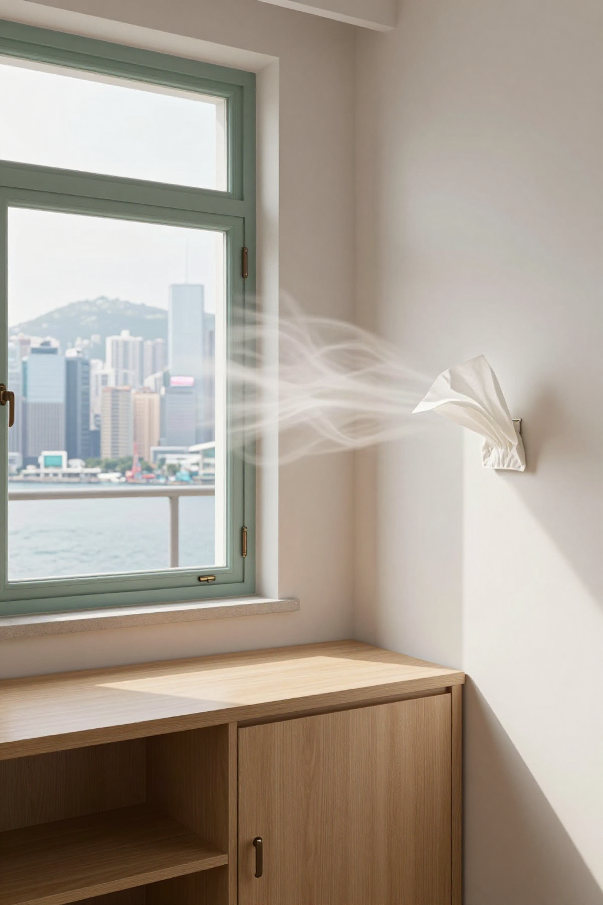
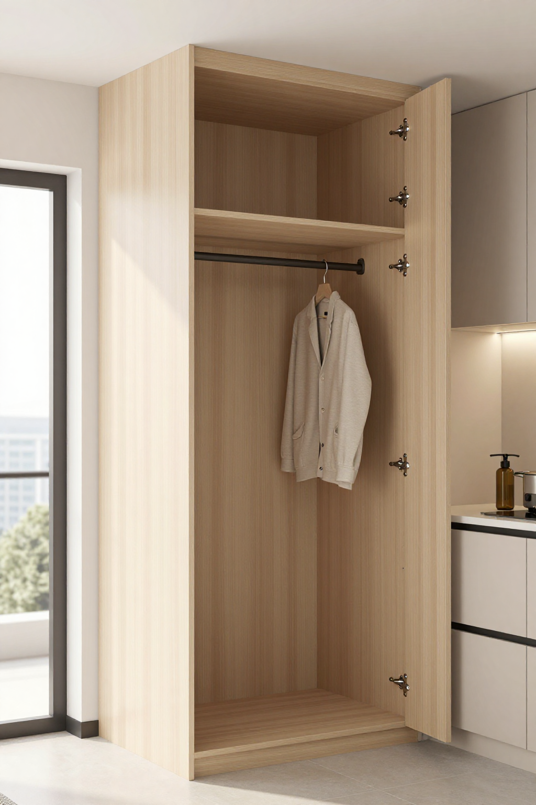
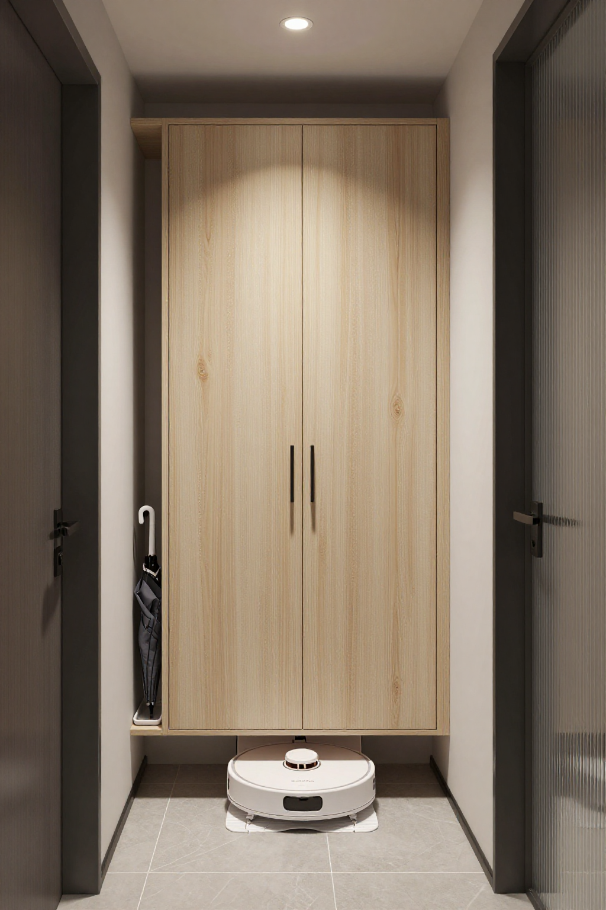

五年規劃落地第二日：北角300呎舊單位，阿May一家先把收納通風搞掂

📍 場景：北角300呎舊單位｜主講：張丹楓（8年全屋定制）｜設計溝通：雲蕾｜屋主：阿May一家｜WhatsApp 報價：852 5190 2328
序幕：五年規劃落地第二日，銅鑼灣一場雨
我係張丹楓，同太太雲蕾一齊做咗8年裝修。今日係2026年9月17日——尋日9月16日，特首喺立法會宣讀咗香港第一份五年規劃（2026-2030）同2026年施政報告，今日上午特首仲要去立法會互動交流答問會，成個香港都在講284個工作指標、租置計劃、北都產業主導。
銅鑼灣一場雨啱啱停，唐樓天井仲滴緊水。我拎住卷尺上到北角一戶三百幾呎單位，門一開，先聞到一陣焗住嘅木味。屋主阿May啱啱收工，放低手袋就問我：「師傅，聽講尋日公布咗五年規劃，今日特首又去立法會答問，之後樓市、社區建設會唔會有新變化？我哋而家裝修，應該追最新款，定係慳住先？」
「阿May，裝修唔係追新聞，係先搞清楚一家人每日點用間屋。政策規劃城市，裝修規劃生活。你哋最缺嘅唔係一面靚電視牆，係收納同通風。」
第一幕：焗住嘅木味，紙巾試風見真章
牆身唔算濕，但油漆邊已經有輕微起泡。我打開窗，用紙巾貼近牆角試風——紙巾幾乎唔郁，證明呢個角落係死風位。香港住屋面積細，櫃體做到頂確實可以增加收納，但背板唔可以完全貼死潮濕外牆，櫃內都要預留通風位。
「我老公想做滿牆櫃，覺得嘢收埋就乾淨；我阿媽又話櫃太多會焗住間屋。到底聽邊個？」
「兩個人都啱一半。櫃要做，但要做得聰明：背板離牆留3mm透氣，濕氣先散到；靠近廚房嘅位置，板材要揀耐潮、封邊完整嘅；水槽下面更要留檢修空間，萬一漏水，唔使拆成間櫃先搵到問題。」
「阿May，你阿媽講得啱，焗住嘅櫃等於養霉。我哋圖入面每組高櫃後面都留咗通風罅，你睇唔到，但住三年你就知分別。」

第二幕：滿牆櫃之爭，靚唔靚住三年先知
阿May老公呢時從房出嚟：「師傅，咁樣會唔會唔夠靚？人哋話無縫、滿牆、隱藏門先係潮流。」我笑住答：「靚唔靚，住三年先知。第一次睇樣板，人人都鍾意無縫滿牆；住落先發現，插座唔夠、櫃門撞床、冷氣風吹唔到，就日日覺得煩。」
「廚房呢組櫃，用耐潮板、封邊封死，鉸鏈用304不鏽鋼。香港蒸氣大，普通鐵鉸兩年就鏽，到時門冧仲煩。貴少少，襟十年。」
「即係唔好為咗追潮流而做？好似五年規劃咁，唔係講數目，係講執行？」
「啱！尋日特首都話，一個制度幾好，睇執行嘅人點執行。裝修一樣，櫃做幾多唔重要，重要係執行到位：背板透氣、封邊完整、檢修口留好，呢啲先係真功夫。」

第三幕：玄關得80公分，薄身懸空櫃救命
再量過玄關，入門位得80公分闊。呢啲位最易做錯：一做厚鞋櫃，個人就要側身入屋；唔做櫃，鞋堆到門口，落雨濕傘入屋，水氣積喺木腳，幾個月就發黑。
「呢度唔好做厚鞋櫃，改薄身懸空櫃。下面離地，留位畀掃地機器人同濕傘盤。香港落雨多，濕傘一入屋，水氣最易積喺木腳；櫃腳離地，清潔同乾燥都方便。」
「原來尋日落完雨，門口嗰灘水就係咁嚟！我仲以為係拖地拖唔乾。」
「北角近海又多雨，呢個懸空做法我哋喺紅磡357呎嗰單都用過，業主話回南天都唔驚。你哋呢個位一樣啱用。」

尾聲：預算分三份，合約寫清楚
臨走前，阿May企喺窗邊，望住遠處北角樓群：「原來等政策消息之前，屋企都有咁多決定要做。」我收好卷尺：「無論將來社區點發展，一間住得舒服、收得整齊、空氣流通嘅屋，永遠唔會過時。」
我建議佢哋把預算分三份：先處理漏水、電箱負荷同通風呢啲基礎安全；再做最常用嘅廚房、衣櫃同玄關收納；最後先考慮燈帶、木飾面同裝飾牆。尤其舊樓改造，唔好只睇表面，要先確認電箱容量、冷氣排水同窗邊滲水。正式開工前，材料品牌、厚度、封邊、五金型號同保修期逐項寫入合約，口頭承諾唔夠。香港地方細，裝修更要計得精；真正有經驗嘅師傅，唔係把屋塞到最滿，而係幫你留返可以呼吸嘅空間。
「師傅，你講嘢好似萍踪侠影录入面嘅雲蕾咁細心，連紙巾試風都諗到。」
「哈哈，雲蕾係我太太，我哋一齊寫『博主講古』，就係想把呢啲量尺現場嘅真事記低。下一篇，就講你哋呢間北角300呎。」
| 項目 | 規格 | 價錢 |
|---|---|---|
| 客廳到頂儲物櫃連透氣背板 | 耐潮板+3mm離牆+封邊 | $12,000 |
| 廚房耐潮地櫃吊櫃+檢修口 | 封邊完整+304鉸鏈 | $14,000 |
| 玄關薄身懸空鞋櫃 | 離地+濕傘盤位 | $5,500 |
| 通風防潮收口+安裝 | 玻璃膠+清垃圾 | $4,000 |
| 總計 | $35,500 |
呢個係2026年9月報價，板材五金價會浮動。記住三句：櫃到頂唔貼死、廚房板要耐潮封邊、玄關懸空唔積水。
❓ 收納通風五問
Q1：五年規劃公布咗，而家裝修要唔要等政策落地先？
唔使等。9月16日公布嘅係2026-2030長遠藍圖，落實靠每年施政報告。屋企漏水、通風、電箱呢啲基礎問題唔會因為政策變好，自己先搞掂先係實際。
Q2：櫃做到頂係咪一定焗？
唔係。到頂增加收納冇錯，錯在背板貼死潮濕牆。留3mm透氣罅、櫃內預留通風位，到頂一樣唔焗，仲唔養塵。
Q3：廚房櫃點揀先襟用？
揀耐潮板、封邊完整、鉸鏈304不鏽鋼，水槽下留檢修口。香港蒸氣大，普通板兩年發脹，鐵鉸兩年生鏽，到時返工仲貴。
Q4：玄關得80公分點做鞋櫃？
做薄身懸空櫃，下面離地留位畀掃地機器人同濕傘盤。唔好做厚櫃，唔係入屋要側身；懸空仲防潮，落雨天門口唔積水。
Q5：點樣分預算先唔超支？
分三份：基礎安全（漏水、電、通風）先；常用收納（廚房、衣櫃、玄關）後；裝飾（燈帶、木飾面）最後。材料品牌厚度封邊五金保修逐項寫入合約，口頭承諾唔算數。
提示：圖片為 SiliconFlow Z-Image-Turbo AI 生成的場景示意圖，不是實際住戶單位。價錢為2026年9月故事報價，實際以度尺為準。